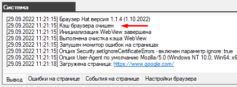
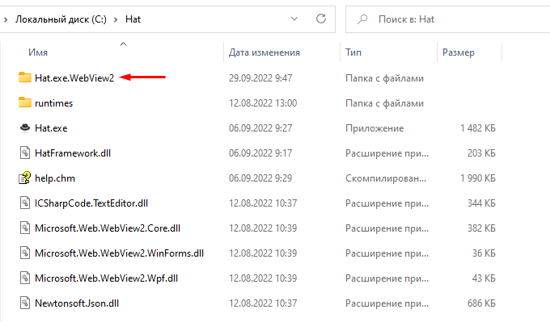

Кэш браузера - очистка
Браузер автоматически выполняет очистку кэша перед каждым запуском и сообщает об этом в консоли

Вы так же можете очистить кэш вручную.
Для этого вам нужно закрыть браузер и удалить папку "Hat.exe.WebView2"

Весь кэш хранится в папке "Hat.exe.WebView2", после того как вы её удалите и запустите браузер эта папка будет снова создана и в ней будет храниться новый кэш текущей сессии.
Created with the Personal Edition of HelpNDoc: Full-featured Help generator